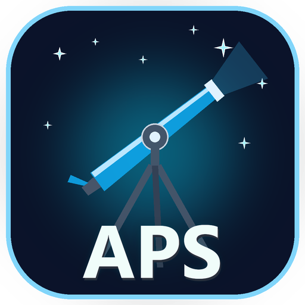
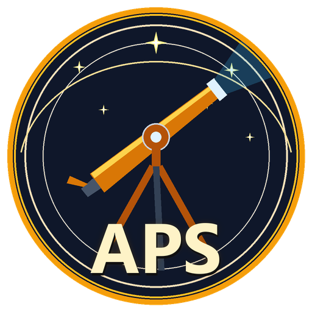
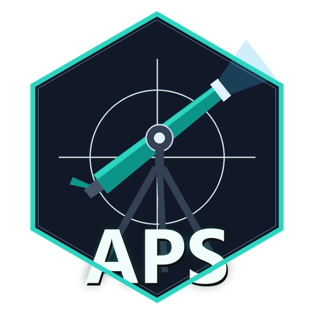
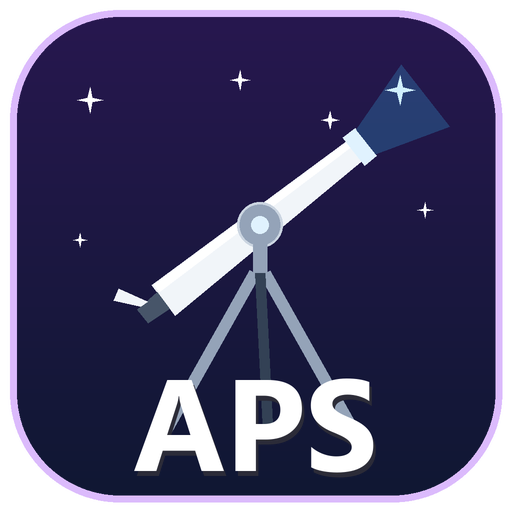
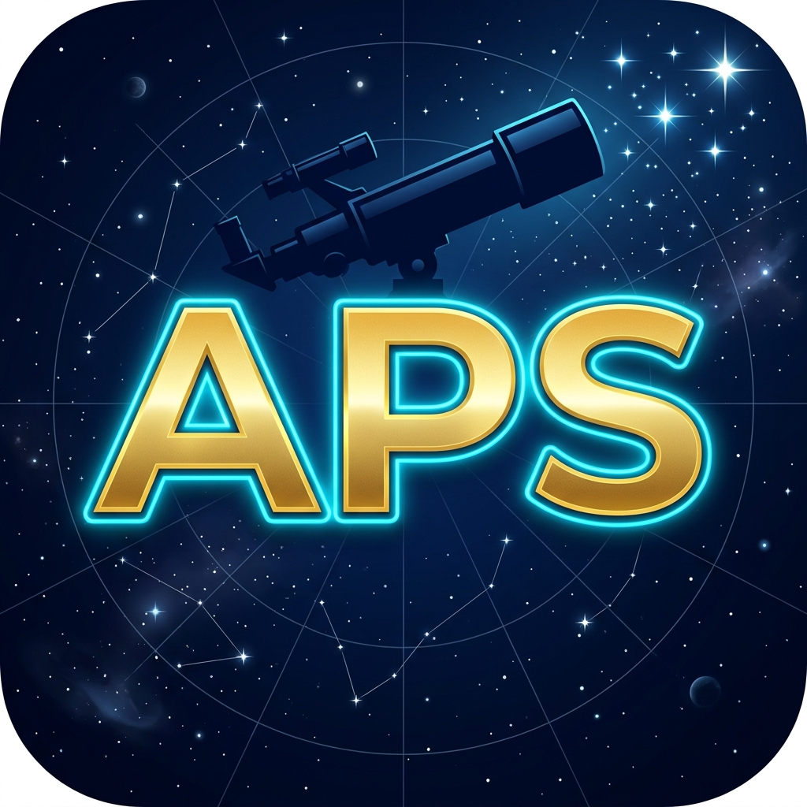
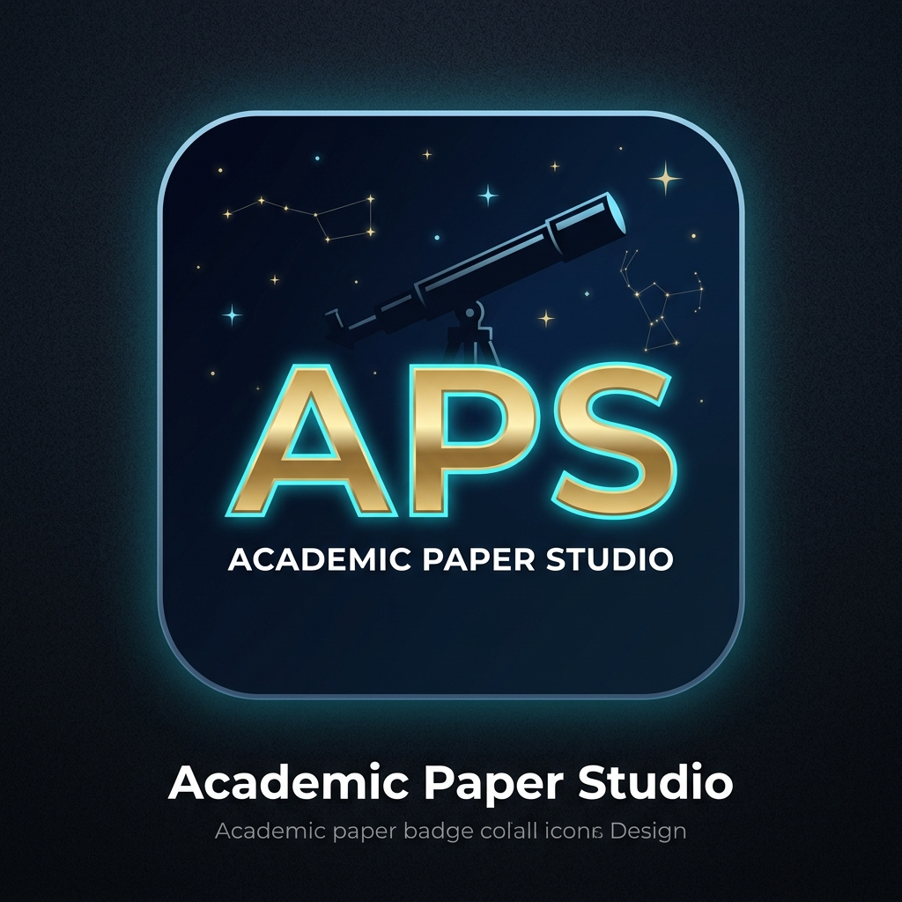

OPCIÓN 1

Academic Paper Studio | APS
Cosmic Neon (Cian / Espacio)
Fondo índigo noche con telescopio estilizado apuntando a las estrellas. Letras APS en blanco brillante con aura cian. Alta legibilidad y contraste.
OPCIÓN 2

Academic Paper Studio | APS
Golden Observatory (Emblema Dorado)
Medallón circular con doble anillo de oro, líneas de órbita celestes y telescopio dorado. Un tono académico clásico y distinguido.
OPCIÓN 3

Academic Paper Studio | APS
Cyber Hexagon (Turquesa Tech)
Insignia geométrica hexagonal en tonos grafito y esmeralda/turquesa con visor reticular. Muy moderno e identificable.
OPCIÓN 4

Academic Paper Studio | APS
Modern Minimal (Violeta Cósmico)
Fondo gradiente violeta profundo a índigo estilo app nativa macOS/iOS, con telescopio plateado y tipografía nítida en blanco.
OPCIÓN 5

Academic Paper Studio | APS
3D Astro Render (Relieve Dorado & Cian)
Renderizado 3D de alta definición con relieve metálico dorado en las siglas APS, silueta de telescopio apuntando a nebulosa y destellos cósmicos.
OPCIÓN 6

Academic Paper Studio | APS
Observatory Badge (Monograma & Constelaciones)
Emblema de insignia astronómica con telescopio nocturno, campo de constelaciones y monograma APS estilizado.